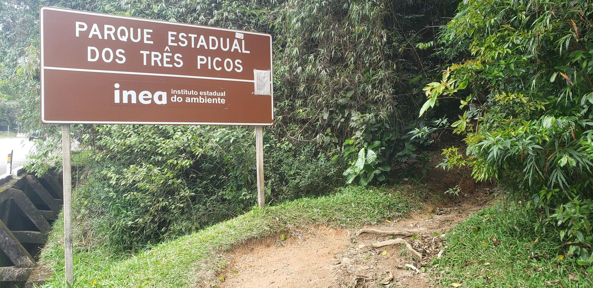

Parque Estadual dos Três Picos
O Parque Estadual dos Três Picos é uma das maiores e mais importantes unidades de conservação do estado do Rio de Janeiro, abrangendo áreas de Nova Friburgo, Teresópolis e Cachoeiras de Macacu. É conhecido por suas formações rochosas impressionantes, trilhas deslumbrantes e ampla biodiversidade.
Trilha da Cabeça do Dragão


A Trilha da Cabeça do Dragão é uma das caminhadas mais impressionantes e cênicas do Parque Estadual dos Três Picos, em Teresópolis (RJ). Situada em meio à exuberante Mata Atlântica de montanha, ela conduz o visitante a um dos mirantes naturais mais espetaculares da região serrana.
Com cerca de 3,5 km de extensão (ida e volta) e nível de dificuldade moderado a difícil, a trilha exige preparo físico intermediário, pois apresenta trechos íngremes e curtos lances de trepação sobre rochas. Durante o trajeto, o aventureiro atravessa áreas sombreadas de floresta, campos de altitude e mirantes naturais que revelam aos poucos o visual majestoso da Serra dos Órgãos.
O ponto alto do percurso é o cume da Cabeça do Dragão, uma formação rochosa que, vista de certos ângulos, lembra o perfil de um dragão.
Com início próximo à portaria do Parque Estadual dos Três Picos, o acesso é simples e bem sinalizado. O local conta com estacionamento, área de recepção e controle ambiental administrados pelo INEA (Instituto Estadual do Ambiente).
Características Gerais
| Item | Informação |
|---|---|
| Localização | Parque Estadual dos Três Picos (Teresópolis / RJ) |
| Altitude do cume | Aprox. 1.470 m |
| Extensão | 3,5 km (ida e volta) |
| Tempo médio | 2h30 a 4h |
| Nível de dificuldade | Moderado a difícil |
| Tipo de atividade | Trilha de montanha / caminhada ecológica |
| Acesso | Estrada para o Vale dos Frades — Portaria Teresópolis do PETP |
| Ponto final | Cume da Cabeça do Dragão (mirante natural) |
| Ambiente natural | Mata Atlântica montana e campos de altitude |
| Sinalização | Boa — setas e totens de pedra |
| Melhor época | Abril a setembro |
| Infraestrutura | Estacionamento e posto do INEA |
| Administração | INEA – Instituto Estadual do Ambiente |
| Indicação | Trilheiros intermediários ou experientes |
Dicas
- ⏰ Comece entre 6h e 8h da manhã para aproveitar o nascer do sol.
- 🌤️ Evite dias de neblina — a visibilidade é essencial.
- 🥾 Use bota ou tênis de trilha com boa tração.
- 💧 Leve pelo menos 1 litro de água por pessoa.
- 🍎 Leve lanches leves como frutas secas e barras de cereal.
- 📸 No cume há formações perfeitas para fotos panorâmicas.
- ⚠️ Cuidado em trechos de rocha, especialmente após chuva.
- 🕊️ Respeite o ambiente e evite sons altos.
- 🧭 Pode ser feita autoguiada ou com guia credenciado.
Trilha da Pedra do Elefante

.jpg)
.jpg)
.jpg)
.jpg)
A Trilha da Pedra do Elefante é uma das mais conhecidas e encantadoras do Parque Estadual dos Três Picos (PETP).
Localizada próxima ao Mirante do Soberbo, em Teresópolis, ela oferece uma caminhada curta, mas com visual de tirar
o fôlego. Ideal para quem busca uma experiência leve de contato com a natureza.
Com cerca de 1,5 km (somente ida) e nível moderado, apresenta subidas curtas com degraus naturais e trechos de pedra.
O topo, a aproximadamente 1.180 metros de altitude, revela uma vista panorâmica impressionante da Serra dos Órgãos,
incluindo o Dedo de Deus e a Pedra do Sino.
O acesso é feito pelo Mirante do Soberbo, ao lado da BR-116, e a trilha é bem sinalizada e mantida pelo INEA.
Características Gerais
| Item | Informação |
|---|---|
| Localização | Parque Estadual dos Três Picos (Teresópolis / RJ) |
| Altitude do cume | Aprox. 1.180 m |
| Extensão | 1,5 km (somente ida) |
| Tempo médio | 1h30 a 2h (ida e volta) |
| Nível de dificuldade | Moderado |
| Tipo de atividade | Trilha ecológica / contemplação |
| Acesso | Mirante do Soberbo — BR-116 (Teresópolis–Guapimirim) |
| Ponto final | Topo da Pedra do Elefante |
| Ambiente natural | Mata Atlântica de altitude |
| Sinalização | Boa — caminho bem visível |
| Melhor época | Março a setembro |
| Infraestrutura | Estacionamento, lanchonetes e banheiros no Mirante |
| Administração | INEA – Instituto Estadual do Ambiente |
| Indicação | Iniciantes e aventureiros ocasionais |
Dicas
- ⏰ Comece entre 6h e 8h da manhã para aproveitar o clima fresco.
- 🚫 Evite horários quentes — o sol é forte após 10h.
- 🌤️ Verifique o tempo: neblina ou chuva reduzem a visibilidade.
- 🥾 Use calçado adequado — tênis ou bota de trilha com boa aderência.
- 💧 Leve água e lanche leve — não há pontos de abastecimento.
- 📸 O cume revela vista para o Dedo de Deus e Pedra do Sino.
- ♻️ Leve seu lixo de volta e evite ruídos altos.
Trilha dos Dois Bicos
.png)
.png)
.png)
.png)
.png)
A Trilha dos Dois Bicos é uma das mais marcantes do Parque Estadual dos Três Picos, situada no Vale das Sebastianas,
em Teresópolis (RJ). O percurso tem cerca de 6 a 8 km (ida e volta), com nível de dificuldade moderado, e leva ao
topo de duas formações rochosas que proporcionam uma vista panorâmica espetacular de 360° da Serra dos Órgãos.
O trajeto alterna trechos de estrada de terra, pasto e mata nativa, com subidas exigentes e exposição ao sol.
O esforço é recompensado por um visual incrível — ideal para fotos e contemplação. A trilha é mantida pelo INEA e é
indicada para aventureiros com alguma experiência.
O acesso se dá pela região do Vale das Sebastianas, dentro dos limites do Parque Estadual dos Três Picos.
Características Gerais
| Item | Informação |
|---|---|
| Localização | Parque Estadual dos Três Picos – Vale das Sebastianas (Teresópolis / RJ) |
| Altitude do cume | Aprox. 1.520 m |
| Extensão | 6 a 8 km (ida e volta) |
| Tempo médio | 4h a 6h |
| Nível de dificuldade | Moderado |
| Tipo de atividade | Caminhada de montanha / trilha panorâmica |
| Acesso | Estrada de terra até o Vale das Sebastianas |
| Ponto final | Cume dos Dois Bicos (mirante natural) |
| Ambiente natural | Pastos, mata nativa e rochas graníticas |
| Sinalização | Parcial — requer atenção e navegação por GPS |
| Melhor época | Abril a setembro |
| Infraestrutura | Sem estrutura — leve o necessário |
| Administração | INEA – Instituto Estadual do Ambiente |
| Indicação | Trilheiros intermediários e experientes |
Dicas
- ⏰ Comece entre 6h e 8h para aproveitar o clima fresco.
- 🌧️ Evite dias de chuva — o terreno fica escorregadio.
- 💧 Leve no mínimo 1,5L de água por pessoa.
- 🥾 Use calçado com boa tração — há trechos de pedra e pasto.
- ☀️ Use protetor solar, boné e óculos escuros.
- 🍎 Leve lanches leves e energéticos.
- 📸 O cume tem vista para o Dedo de Deus e Pedra do Elefante.
- 🧭 Use GPS ou guia local — a trilha tem bifurcações.
- 🕊️ Preserve o ambiente e traga seu lixo de volta.
Parque Natural Montanhas de Teresópolis
Localizado na região rural de Santa Rita, o Parque Natural Montanhas de Teresópolis é uma unidade de conservação municipal que oferece trilhas, cachoeiras e mirantes com vistas incríveis para a Serra dos Órgãos. É um destino ideal para ecoturismo e observação de fauna e flora.
Trilha da Pedra da Tartaruga
.jpg)
.png)
.webp)
.jpg)
.png)
.jpg)
A Trilha da Pedra da Tartaruga, localizada no Parque Natural Municipal Montanhas de Teresópolis (PNMMT), é um verdadeiro convite à aventura, à natureza e à contemplação. Com cerca de 2,5 km de extensão (ida e volta) e nível moderado, essa trilha é perfeita tanto para quem está começando a explorar o ecoturismo quanto para os amantes de montanhas e boas paisagens.
Durante o percurso, o visitante atravessa trechos sombreados de Mata Atlântica, ouve o canto dos pássaros e respira o ar puro das montanhas.
A cada curva, surgem novas vistas, e ao chegar ao topo da pedra — uma imponente formação rochosa que lembra uma tartaruga gigante — o visitante é presenteado com uma vista panorâmica de 360° da Serra dos Órgãos.
Além da trilha, o parque oferece infraestrutura de apoio, com estacionamento, centro de visitantes e acompanhamento de guarda-parques, garantindo uma experiência segura e inesquecível.
Características Gerais
| Item | Informação | |
|---|---|---|
| Localização | Parque Natural Municipal Montanhas de Teresópolis (PNMMT) - Bairro Salaco, Teresópolis (RJ) | |
| Altitude do cume | Aprox. 1.180 m | |
| Extensão | Cerca de 2,5 km (ida e volta) | |
| Tempo médio | 1h30 a 2h30 (ida e volta) | |
| Nível de dificuldade | Moderado | |
| Tipo de atividade | Caminhada ecológica / contemplativa / observação da paisagem | |
| Acesso | Entrada principal do PNMMT – Estrada para o bairro Salaco, com estacionamento e centro de visitantes | |
| Ponto final | Cume da Pedra da Tartaruga, com vista panorâmica da Serra dos Órgãos | |
| Ambiente natural | Mata Atlântica preservada, com mirantes naturais e afloramentos rochosos | |
| Sinalização | Boa – placas indicativas e trilha bem demarcada | |
| Melhor época | Março a setembro, durante o período mais seco e com clima ameno | |
| Infraestrutura | Estacionamento, centro de visitantes, banheiros e equipe de guarda-parques | |
| Administração | Secretaria Municipal de Meio Ambiente | |
| Indicação | Recomendado para famílias, iniciantes e amantes de trilhas leves e visuais panorâmicos |
Dicas
- ⏰ Comece cedo: Inicie a trilha entre 7h e 9h da manhã para aproveitar o clima fresco e evitar o sol forte nas partes abertas.
- 🌅 Pôr do sol imperdível: O topo da pedra é um dos melhores pontos de observação do pôr do sol em Teresópolis — leve lanterna para a descida, caso fique até o final da tarde.
- 👟 Use calçados adequados: Apesar de curta, a trilha tem trechos de subida em lajes de pedra — tênis ou botas de trilha com boa aderência são essenciais.
- 💧 Leve água e lanche leve: Não há quiosques ou vendedores dentro do parque; leve pelo menos 1 litro de água por pessoa.
- 🧴 Protetor solar e repelente: A trilha tem trechos abertos e áreas de mata, então proteja-se do sol e dos insetos.
- 📸 Leve câmera ou celular carregado: O visual é incrível — dá pra ver o Dedo de Deus, Pedra do Sino, Cabeça do Dragão e outras montanhas da Serra dos Órgãos.
- 🚯 Preserve o local: Leve todo o lixo de volta e siga as orientações dos guarda-parques — o local é uma unidade de conservação ambiental.
- 🚗 Acesso fácil: O parque conta com estacionamento e centro de visitantes; o acesso é feito por estrada de terra em boas condições.
- 🌤️ Evite dias de chuva: O piso de pedra pode ficar escorregadio e a neblina pode prejudicar a vista.
Trilha da Pedra Alpina
.jpg)
.png)
.jpg)
.png)
.jpg)
Localizada no coração do Parque Natural Municipal Montanhas de Teresópolis (PNMMT), a Trilha da Pedra Alpina é uma das mais encantadoras experiências para quem busca contato direto com a natureza e vistas panorâmicas deslumbrantes da Serra dos Órgãos.
O percurso começa na Sede Santa Rita, em meio à exuberante Mata Atlântica, com vegetação densa, canto de aves e um clima fresco típico das montanhas. O caminho segue por trechos de subida constante e áreas de pedra exposta, proporcionando uma caminhada desafiadora, porém extremamente recompensadora.
Ao atingir o cume da Pedra Alpina, a cerca de 1.520 metros de altitude, o visitante é presenteado com uma vista de 360° que abrange ícones naturais de Teresópolis, como o Dedo de Deus, a Cabeça do Dragão, a Pedra da Tartaruga e parte do Parque Estadual dos Três Picos. O visual é perfeito para fotos, contemplação e descanso após a trilha.
A trilha é bem sinalizada e pode ser feita com segurança por pessoas com bom preparo físico e calçados adequados. O local conta com infraestrutura básica, como portaria, estacionamento e apoio de guarda-parques, garantindo uma experiência segura e agradável.
Ideal para quem deseja vivenciar o ecoturismo de aventura com uma pitada de contemplação, a Trilha da Pedra Alpina combina natureza, desafio e beleza cênica — um verdadeiro convite para respirar o ar puro das montanhas e se encantar com Teresópolis de um novo ângulo.
Características Gerais
| Item | Informação |
|---|---|
| Localização | Parque Natural Municipal Montanhas de Teresópolis (PNMMT) - Bairro Santa Rita, Teresópolis (RJ) |
| Altitude do cume | Aprox. 1.520 m |
| Extensão | Cerca de 3,5 km (ida) |
| Tempo médio | 3h a 4h (ida e volta) |
| Nível de dificuldade | Moderado a Difícil |
| Tipo de atividade | Trilha ecológica e mirantte panorâmico |
| Acesso | Pela Sede Santa Rita do PNMMT (acesso sinalizado e com estacionamento) |
| Ponto final | Cume da Pedra Alpina, com ampla vista para o Dedo de Deus, Cabeça do Dragão e outras montanhas da Serra dos Órgãos |
| Ambiente natural | Mata Atlântica de montanha, com trechos de floresta densa, afloramentos rochosos e rica biodiversidade |
| Sinalização | Boa – placas indicativas e trilha bem demarcada |
| Melhor época | Abril a setembro, período mais seco e com maior visibilidade |
| Infraestrutura | Portaria, estacionamento, banheiros e apoio dos guarda-parques |
| Administração | Prefeitura de Teresópolis — Secretaria Municipal de Meio Ambiente (SMMA) |
| Indicação | Recomendado para trilheiros com alguma experiência e bom condicionamento físico |
Dicas
- ⏰ O ideal é iniciar a trilha entre 7h e 8h da manhã, para aproveitar o clima fresco e o visual limpo no cume antes da formação de neblina.
- 🍌 Leve lanche leve e energético: Barras de cereal, frutas secas e castanhas ajudam a manter o ritmo até o cume.
- 👟 Use calçados apropriados: A trilha possui subidas íngremes e trechos de pedra expostos, portanto use botas ou tênis de trilha com boa aderência.
- 💧 Leve bastante água: Como o percurso tem áreas abertas e pouca sombra, leve pelo menos 1,5 litro de água por pessoa.
- 🧴 Protetor solar e boné são indispensáveis: A parte final é bem ensolarada e pode ficar quente, especialmente em dias de verão.
- 📸 Aproveite o visual do topo: Do alto da Pedra Alpina é possível ver o Dedo de Deus, Pedra do Sino, Cabeça do Dragão e até partes da Pedra da Tartaruga — um verdadeiro mirante natural.
- 🚯 Preserve o ambiente: Leve seu lixo de volta, evite ruídos altos e siga as orientações dos guarda-parques — o local faz parte de uma unidade de conservação ambiental.
- 🚗 Acesso pela Sede Santa Rita: O início da trilha fica dentro do Parque Natural Municipal Montanhas de Teresópolis, com estacionamento e portaria.
- 🌧️ Evite dias nublados ou chuvosos: A visibilidade é essencial para aproveitar o visual, e o piso de pedra pode ficar escorregadio com chuva.
Trilha Vidocq Casas
.jpg)
.jpg)
.jpg)
.jpg)
.jpg)
.jpg)
A Trilha Vidocq Casas, localizada na Sede Pedra da Tartaruga do Parque Natural Municipal Montanhas de Teresópolis (PNMMT), é uma experiência imperdível para quem ama natureza, tranquilidade e belas paisagens.
Com cerca de 2,5 km de extensão (ida e volta) e nível de dificuldade fácil a moderado, o trajeto foi cuidadosamente planejado para proporcionar uma caminhada leve e contemplativa, ideal para famílias, iniciantes e visitantes em busca de um passeio relaxante.
Durante o percurso, o visitante atravessa quatro pontes de madeira — incluindo uma impressionante estrutura de 42 metros de comprimento — que cortam pequenos vales e riachos rodeados pela Mata Atlântica preservada. O som das aves e o ar puro das montanhas tornam o ambiente ainda mais especial.
Ao final da trilha, o mirante natural revela uma vista deslumbrante para a Pedra da Tartaruga e para as montanhas da Serra dos Órgãos, proporcionando um dos visuais mais fotogênicos do parque. É o lugar perfeito para relaxar, apreciar o pôr do sol e renovar as energias em meio à natureza.
Mais do que um passeio, a Trilha Vidocq Casas é uma homenagem à preservação ambiental e à história de Teresópolis — batizada em tributo ao poeta e ambientalista Vidocq Casas, um defensor incansável da natureza local.
🌳 Ideal para quem busca sossego, ar puro e uma conexão autêntica com o ecoturismo da Serra dos Órgãos.
Características Gerais
| Item | Informação |
|---|---|
| Localização | Parque Natural Municipal Montanhas de Teresópolis (PNMMT) – bairro Salaco, Teresópolis (RJ) |
| Altitude do mirante | Aprox. 1.150 m |
| Extensão | Cerca de 2,5 km (ida e volta) |
| Tempo médio | 1h30 a 2h (ida e volta) |
| Nível de dificuldade | Fácil a Moderado – trajeto tranquilo com pequenas subidas |
| Tipo de atividade | Caminhada ecológica / contemplativa / observação da natureza |
| Acesso | Entrada pela sede Pedra da Tartaruga – PNMMT, com estacionamento e centro de visitantes |
| Ponto final | Mirante natural com vista para a Pedra da Tartaruga e a Serra dos Órgãos |
| Ambiente natural | Mata Atlântica preservada, áreas abertas e quatro pontes de madeira |
| Sinalização | Excelente – trilha bem demarcada e com placas informativas |
| Melhor época | Março a setembro, em dias secos e com clima ameno |
| Infraestrutura | Estacionamento, banheiros, centro de visitantes e equipe de guarda-parques |
| Administração | Prefeitura de Teresópolis – Secretaria Municipal de Meio Ambiente |
| Indicação | Recomendado para famílias, iniciantes, escolas e turistas em busca de contato leve com a natureza |
Dicas
- ⏰ Comece cedo: Faça a trilha entre 8h e 10h da manhã para aproveitar o clima mais fresco e a iluminação perfeita para fotos.
- 👟 Calçado confortável: Use tênis ou bota de trilha — o terreno é leve, mas há trechos com raízes e pequenas subidas.
- 🌿 Aproveite as pontes: A trilha conta com quatro pontes de madeira, sendo uma delas de 42 metros — ótimos pontos para fotos e observação da natureza.
- 📸 Leve sua câmera ou celular: O mirante final oferece uma vista incrível da Pedra da Tartaruga e da Serra dos Órgãos — um cenário perfeito para registros memoráveis.
- 💧 Hidratação é essencial: Leve água e lanche leve, especialmente em dias quentes, pois não há comércio dentro do parque.
- 🧴 Protetor solar e repelente: Mesmo com áreas sombreadas, o uso é importante para garantir conforto durante o passeio.
- 🚯 Preserve o local: Leve todo o lixo de volta e siga as orientações dos guarda-parques — o local é uma unidade de conservação ambiental.
- 🚗 Acesso facilitado: A trilha começa na Sede Pedra da Tartaruga, que possui estacionamento, centro de visitantes e banheiros.
- 🌤️ Prefira dias secos: Evite a visita em dias chuvosos, pois o solo pode ficar escorregadio e as pontes úmidas.
- 🌱 Respeite a natureza: Caminhe apenas nas áreas demarcadas, não deixe lixo e evite ruídos altos — o local é uma unidade de conservação ambiental.
Parque Nacional da Serra dos Órgãos
O Parque Nacional da Serra dos Órgãos (PARNASO) é uma das mais antigas unidades de conservação do Brasil, famoso pelo icônico Dedo de Deus e por suas trilhas lendárias como a Travessia Petrópolis-Teresópolis.
Trilha da Pedra do Sino
.jpg)
.webp)
.jpg)
A Trilha da Pedra do Sino é uma das mais famosas do Brasil e leva ao ponto mais alto da Serra dos Órgãos, com 2.275 metros de altitude. Localizada na Sede Teresópolis do Parque Nacional da Serra dos Órgãos (PARNASO), tem cerca de 11 km até o cume (22 km ida e volta) e oferece uma vista panorâmica incrível das montanhas e da Baía de Guanabara.
Com nível de dificuldade moderado a difícil, o percurso atravessa trechos de mata atlântica, riachos e campos de altitude, podendo ser feito em um ou dois dias — com pernoite no Abrigo 4. É uma trilha bem sinalizada, ideal para aventureiros e amantes da natureza que buscam uma experiência intensa e recompensadora.
Características Gerais
| Item | Informação |
|---|---|
| Localização | Parque Nacional da Serra dos Órgãos (PARNASO) |
| Altitude do cume | 2.275 metros (ponto mais alto da Serra dos Órgãos) |
| Extensão | Aproximadamente 11 km (ida) / 22 km (ida e volta) |
| Tempo médio | 5 a 6 horas de subida / 4 a 5 horas de descida |
| Nível de dificuldade | Moderado a difícil — trilha longa, com trechos de subida íngreme e exigência física elevada |
| Tipo de atividade | Ida e volta, com possibilidade de pernoite no Abrigo 4 |
| Acesso | O acesso usual se dá pela Sede Teresópolis do parque. |
| Ponto final | Cume da Pedra do Sino — mirante natural com vista panorâmica da Serra dos Órgãos, Baía de Guanabara e cidade do Rio de Janeiro |
| Ambiente natural | Mata Atlântica com transição para campos de altitude e formações rochosas |
| Sinalização | Excelente — placas e marcações em toda a extensão do percurso |
| Melhor época | Abril a setembro, durante o período seco e de temperaturas amenas |
| Infraestrutura | Abrigo 4 (refúgio de montanha com sanitários e espaço para descanso) e área de camping autorizada |
| Administração | ICMBio – Parque Nacional da Serra dos Órgãos (PARNASO) |
| Indicação | Recomendado para trilheiros experientes, montanhistas e amantes de longa caminhada que buscam desafios e vistas deslumbrantes |
Dicas
- 💪 É recomendado para quem tem boa condição física e equipamento apropriado (calçado de trilha, mochila, água, alimento).
- 🌦️ Verifique previamente as condições climáticas — o clima de montanha muda rápido, especialmente em altitudes elevadas.
- 🏕️ Se for pernoitar, reserve antes o abrigo ou acampamento, conforme as normas do parque. kmonadventure.com.br
- 🌿 Respeite a natureza: não saia da trilha, leve seu lixo de volta, proteja a vegetação e a fauna.
- 🗓️ Melhor época: durante a estação seca ou com menor risco de chuvas fortes, para melhor aproveitamento e segurança.
🕒 Horário de Funcionamento:
- 🚫 Segunda-Feira: Fechado
- 📅 Terça-Feira: 07:00 – 16:00
- 📅 Quarta-Feira: 07:00 – 16:00
- 📅 Quinta-Feira: 07:00 – 16:00
- 📅 Sexta-Feira: 07:00 – 16:00
- 🌄 Sábado: 07:00 – 16:00
- 🌞 Domingo: 07:00 – 16:00
Trilha Mozart Catão
.avif)
.jpeg)
.jpg)
.avif)
.avif)
A Trilha Mozart Catão é uma das mais emblemáticas do Parque Nacional da Serra dos Órgãos (PARNASO), oferecendo uma experiência única de contato com a natureza e vistas panorâmicas deslumbrantes. Com cerca de 7 km de extensão (ida e volta) e nível de dificuldade moderado, essa trilha é ideal para aventureiros que desejam explorar a beleza da Serra dos Órgãos sem enfrentar os desafios das trilhas mais longas.
O percurso começa na Sede Teresópolis do parque e segue por trechos de mata atlântica preservada, riachos cristalinos e formações rochosas impressionantes. Ao longo do caminho, os trilheiros são presenteados com mirantes naturais que oferecem vistas espetaculares do Dedo de Deus, da Pedra do Sino e de outras montanhas icônicas da região.
A trilha é bem sinalizada e pode ser feita em um único dia, tornando-a acessível para aqueles com boa condição física que buscam uma aventura recompensadora. No final do trajeto, o mirante Mozart Catão proporciona um cenário perfeito para fotos, contemplação e descanso antes do retorno.
Características Gerais
| Item | Informação |
|---|---|
| Localização | Parque Nacional da Serra dos Órgãos (PARNASO) |
| Altitude | Entre 900 e 1.050 metros |
| Extensão | Aproximadamente 800 metros (ida) / 1,6 km (ida e volta) |
| Tempo médio | 1h30min (ida e volta, ritmo leve) |
| Nível de dificuldade | Leve a moderado — exige pouco preparo físico, mas possui trechos de subida |
| Tipo de atividade | Ida e volta, autoguiada e bem demarcada |
| Acesso | O acesso usual se dá pela Sede Teresópolis do parque. |
| Ponto final | Mirante Alexandre Oliveira — vista panorâmica da cidade e da Serra dos Órgãos |
| Ambiente natural | Mata Atlântica densa, com sombreamento, riachos e vegetação exuberante |
| Sinalização | Boa — placas e setas informativas ao longo do caminho |
| Melhor época | Entre abril e setembro (período seco, clima mais ameno) |
| Infraestrutura | Estacionamento, banheiros e centro de visitantes na Sede Teresópolis |
| Administração | ICMBio – Parque Nacional da Serra dos Órgãos (PARNASO) |
| Indicação | Ideal para famílias, iniciantes e quem busca uma caminhada leve com belas vistas |
Trilha da Primavera
.jpg)
.png)
.png)
A trilha passa por um trecho preservado da Mata Atlântica, com vegetação densa, pequenas árvores, palmeiras-juçara e samambaias. Durante o trajeto, é possível ouvir pássaros e, ocasionalmente, ver pequenos animais silvestres.
A caminhada é tranquila, com terreno de terra batida e leves aclives, mas sem obstáculos grandes. O nome “Primavera” vem justamente da sensação agradável de flores, sombra e tranquilidade que o percurso oferece.
Características Gerais
| Item | Informação |
|---|---|
| Localização | Parque Nacional da Serra dos Órgãos (PARNASO) |
| Altitude | Entre 900 e 1.000 metros. |
| Extensão | Aproximadamente 500 metros (ida) |
| Tempo médio | Cerca de 15 a 20 minutos |
| Tipo de percurso | Ida e volta pelo mesmo caminho. |
| Acesso | O acesso usual se dá pela Sede Teresópolis do parque. |
| Infraestrutura | Estacionamento, banheiros e centro de visitantes na Sede Teresópolis |
| Administração | ICMBio – Parque Nacional da Serra dos Órgãos (PARNASO) |
🕒 Horário de Funcionamento:
- 🚫 Segunda-Feira: Fechado
- 📅 Terça-Feira: 07:00 – 16:00
- 📅 Quarta-Feira: 07:00 – 16:00
- 📅 Quinta-Feira: 07:00 – 16:00
- 📅 Sexta-Feira: 07:00 – 16:00
- 🌄 Sábado: 07:00 – 16:00
- 🌞 Domingo: 07:00 – 16:00